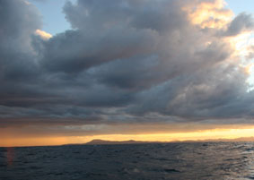
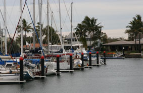
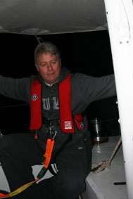
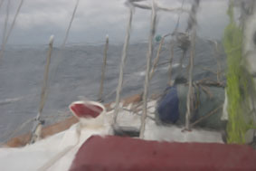
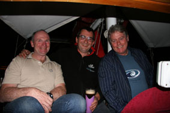
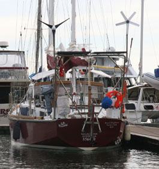
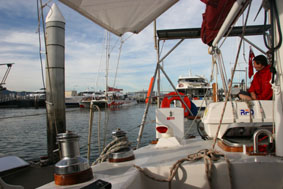
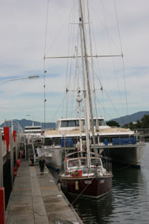

|
|
|
|
|
From Sydney to Cairns
4th July 2007 - written by Peter
Greetings all – I’ll try and give Mum a call a little later tonight, but in case I miss her, and anyway I like writing these, here’s the next update.
And this one’s from Cairns and I suppose the big news is that it looks like I can finally pack my thermal underwear away. The sky is a strange blue colour, not the unremitting grey we’ve been seeing, and there’s this strange bright yellow thing in the sky.
We last wrote from a very wet and windy Sydney but at last after five days, we managed to get away with the aim of getting to Brisbane. The forecast wasn’t great, it was still very cold and the sea was still very bumpy from all the bad weather, but we had to keep going.
All in all it wasn’t too bad a run. The wind stayed pretty constant in the low 20’s, but from a bad direction for us. A pretty slow and rolly passage. At one time, there were wind warnings out about another big front coming in, so we were planning to dive into Coffs Harbour.
It was getting late and we still had 20 miles
to go when we saw the front coming up 
So we got to Brisbane OK, Jean headed off to
Perth and three friends, Chris “Pommy”, James “Mangy” and
Lloyd, joined me for this next leg up to Cairns. Sadly,
only two made it. Pommy and Mangy have never done any
sailing before (Lloyds’ well experienced) and while Pommy
was fine, Mangy was as sea sick as I have ever

The weather over this stretch is pretty
screwed at the moment – unseasonably cold and suffering from
all sorts of odd little spins offs from the bad weather down
south. The weather forecasts were almost changing on an
hourly basis and we suffered from a mixture of no wind to
30+ knots – I think we must have put in or and shaken out
reefs five or six times a day – and since it’s always Peter
going up onto the foredeck to do the sail work, whether it
was my watch or not, I was pretty shattered after four days. 
We’d always planned a stop somewhere in the Whitsundays and decided on Hamilton Island since it’s only a little way out of our way. It became clear that we were going to get there in the wee hours and where possible, we never come into a strange Marina at night. So we headed offshore for an hour and then hove to – this is a great trick to stall the yacht and has a very comfortable motion. Since we weren’t going anywhere, Pommy took on my watch and I managed to grab a few hours sleep – wonderful.
Then into Hamilton Island Marina – just in time to watch the weather close in again. Ham Is is one of the famous resorts in Oz, but never go there when it’s cold, wet and raining – especially when it’s meant to be hot, sunny and glorious. A couple of thousand pissed off holiday makers, who have paid big bucks to get there, wandering round in borrowed sweaters and those funny little see though rain coats (the only thing for sale in the shops) were not great company. It was dead – most people seemed to be spending all their time in their rooms sulking.
After a couple of days, the forecast for the next day looked good so we got ready to leave – alarms being set for 5am. And they would have worked if we hadn’t already been awake listening to the wind howling though the rigging and the rain bucketing down. That day, I went and had a chat with an old guy who runs one the yacht charter firms to get a bit of local knowledge. Not a happy bunny with 20 odd yachts either sitting in the Marina or hiding in safe anchorages (that equates to some 100 odd holiday makers who were not enjoying their expensive charters).
He said he’d never seen weather like this at this time of year in the 10 odd years he’d worked there and had no idea what the weather was going to do. He advised staying for another 48 hours.
But the next morning dawned with a hint of
sun, nice winds and no rain – so we went. We should have
listened. At first it was grand sailing, but as the day
wore on the wind

But the great thing is how Hinewai handles it all in her stride. She may be dipping her rails and rolling horrible sometimes, but the bad weather just doesn’t worry her – it’s been a grand exercise in relearning and practicing some of the bad weather tactics we know – and also getting confidence in both ourselves and the big girl.
The bad weather only lasted 12 hours before
dropping out giving a great sail for the last couple of days
up to Cairns where Pommy and

The plan was to only spend 48 hours here, but it’s drifted out to five days. With all the bad weather stops, we’re so far behind schedule that we’re going to probably miss the start of the rally up to Indonesia anyway, but we’ve learned there’s a second group leaving two weeks later that we’ll either join or slot in between them and the main rally.
It’s given us the chance to sort out the End
of Financial Year accounts for HKD and OO (wow, that was a
really fun Saturday), fix a few things on the boat (she’s
holding

We’ve also spent a day and more going through all the charts from here to Darwin and working out the route. This is going to be the longest leg yet to date – almost 1,300nm (c.1,500 miles) up to Cape York and then across the Gulf of Carpentaria.
It’s going to be challenging.
 The first 500nm are all up inside the Great Barrier Reef, dodging bits of coral and the big ships that use the very few clear passages. Most yachts do this in day-by-day bites, anchoring overnight, but we have to go straight through. To add a certain piquant, the Pilot Books all say you can be pretty certain of a nice 20-25kn SE wind at this time of year – great for us – but the forecast is for 5-10kn – looks like we’ll be breaking out all the light wind sails we’ve not had a chance to play with yet. And we only carry enough fuel to motor maybe 400 miles and there are few places to refuel.
After the maze to Cape York, we stop heading more north than west and do a firm left turn. We’ll have our first “sea” passage, albeit only c.300nm across the Gulf, followed by another c.300 across Arnhem Land before we head south again into Darwin.
And, at last, we have to start thinking about
tides and currents again. In the early part of the trip
north, we had to try and keep out of the strong southerly
flow of the East 
We estimate the trip to Darwin will take about 14 days so we’d hope to be there on the 19th. While the rally doesn’t actually start until 21st, we’ve still got to do things like get Indon visas, provision etc etc so we’ll probably not get away for 4/5 days.
We’ll give you a call a couple of time via the Satellite phone to let you know all is well (I hope). What we’ll also try to do is switch it on at around 9am your time everyday for ten minutes or so – don’t worry if you try and get through and it doesn’t answer – we may be busy, or have just forgotten.
Well, that’s it for now. And it’s good. It feels like we’re now getting into the trip….
All our love
Peter & Jean
Next Log Page: From Cairns to the Torres Strait
|
|
|
|
|
|
|
The Crew The Route The Yacht The Log Guestbook Links Contact Us |
|
|
|
|
|
Home |
|
|
All Original Content of this Web Site Copyright © 2000, 2001, 2002, 2003, 2004, 2005, 2006, 2007, 2008, 2009 Ocean Odyssey Pty Ltd |